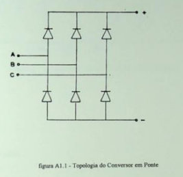

Retificador Trifásico Não Controlado de Seis Pulsos
O retificador trifásico não controlado de seis pulsos é um dispositivo que converte uma tensão elétrica alternada (AC) em uma tensão elétrica contínua (DC). Ele é composto por seis diodos, um transformador trifásico e um filtro capacitivo.
As formas de onda da tensão de entrada e da tensão de saída do retificador trifásico não controlado de seis pulsos são mostradas na figura abaixo.
A tensão de saída desse retificador é uma onda senoidal com seis pulsos por ciclo. Onde a tensão média da saída é igual à tensão média das tensões das três fases da entrada. Suas principais vantagens são:
Maior eficiência: A eficiência do retificador trifásico não controlado de seis pulsos é geralmente superior a 85%.
Menor distorção harmônica: A distorção harmônica de seis pulsos é geralmente inferior a 15%.
No entanto, o retificador de seis pulsos também apresenta algumas desvantagens. Sendo elas o seu custo, que é superior ao custo do retificador trifásico não controlado de três pulsos. A forma de onda desse modelo é uma onda senoidal com seis pulsos por ciclo. Onde a tensão média da saída é igual à tensão média das tensões das três fases da entrada.
Sua tensão de saída é composta por dois tipos de componentes: A componente senoidal, e a harmônica. Sendo a harmônica uma serie de tensões de frequências fundamentais. Distorção harmônica de tensão de saída é medida pela razão entre a potência harmônica de tensão de saída com potencia de tensão fundamental. A distorção harmônica do retificador trifásico não controlado de seis pulsos é geralmente inferior a 15%.